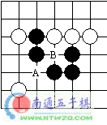
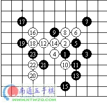

棋手提高水平的道路
#1 棋手提高水平的道路 作者：莲子 发表时间：2006-1-27 13:32:04
最近很多的新俱乐部和新选手出现了，而且他们全部会重复从小俱乐部到大俱乐部，从初学者到高手(master)的道路。
众所周知初学者旁边有好选手的话，棋艺进步和提高水平会更迅速。不过，当俱乐部与"外部世界"的接触停止的时候，选手水平的提高也会终止。这就是为什么我在这里描述提高水平的方法，指出一些不足，典型的阶段，给一些建议是有用的了。
从初学者到高手
初接触连珠，每一位初学者喜欢连接，尽管它们并不复杂，只是2，3步的四而已。他经常在没看到胜利，甚至没有任何作用的时候来冲四。这个阶段可以用两句话以这样的方式描述：进攻－防守，没有防守－失败。
第二个阶段的开始于是当初学者以获胜的连接代替他只是把棋子放到他注意到的连接点。这里，典型的方法是做三，而对手仅仅能以一种途径来挡这个活三，希望其将犯错误。
下一个阶段的显著特征是可以实行由5-7棋步构成的结合的能力。不过，当进行进攻的连接时，选手往往忘记防守的必要性。并且，如同它经常发生的那样，在完成最后的活三的连接进攻时，对手VCT也来了。大致，这是业余的选手的教育里的最后的阶段，是无组织的典型的连珠代表。实际上所有在入连珠俱乐部的选手都有一些这些阶段的缺点。
选手加入俱乐部，学习连珠规则。对禁手规则的第一反应是――他们是什么？实际上这些规则不是上述所描述阶段所必须的，而仅仅是进一步提高技巧不可缺少的东西。开始下禁手的棋，选手能凸显他选择的赢棋的正确顺序的能力(当他执黑的时候)，寻找连接时，考虑对手的能力(当他用白棋的时候)。要详细理解禁手规则的细节是相当困难的，尤其当没有资料和好的选手在旁边的时候。不能详细理解禁手规则，你甚至不成成为一个好的无禁(原文用crosses & noughts形象的描述)的选手。必须记住的是：它不是表面上的三和四的类似集合，关键的是它有成五的可能。
如同我已经指出的那样，选手水平更进一步的改善主要是在俱乐部中，掌握计划和准备连接的能力是必须的。在这个阶段，选手要学会典型的进攻方式，然后在他自己的棋局的典型局面下运用。第一阶段的缺点在现阶段被消除了。选手研究很多的问题，准备发展的基本技巧，可以在棋局中进行思考。这是一个非常重要的阶段(大约相应5级的水平)并且，选手对连珠的态度的严肃性被它验证。没有严肃的态度--选手就不会认为连珠是一项运动--就会离开。他们通常不研究资料和理论，离开锦标赛，不支付成员费用。经验告诉我们他们对连珠的兴趣在2-3个月之后就会下降，并且一两年后他们从连珠的视线里消失，尽管俱乐部里的工作仍以最好的方法组织着。
有趣的是，第一次知道禁手的规则后，几乎所有的玩家都愿意选白棋，因为他们不必担心被抓禁手。实际上他们还不懂利用禁手规则来赢棋，下得还是无禁的游戏。但是，更进一步的进步只有根据规则掌握全部可能的方法才能成为可能。怎么让我来描述那种令人兴奋的心情呢，当你第一次通过连续进攻来抓禁手，看着迷惑的对手一步一步直接挡着你的杀，最终导致终局。利用长连和双四的禁手取得胜利是特别令人高兴的。"一子双*"更是连珠皇冠上的真正的明珠。一子双逼是这样一步棋，即使到黑走棋，他也逃不掉A或者B位的禁手。

这个典型的学棋阶段会有一个特有的错误――对禁手有一种特有的嗜好，当他执白棋时，总是想逼对手走禁手来取得胜利。这种过分的追求，和其他错误一样，必须克服，有时以恼人的失败为代价。
下一个阶段掌握向VCF-作杀和反四这样的方法。选手感觉得到他们的美，并且，他开始到处都使用他们。经常发生的是：如果他有防杀的两种的可能性，他会选择反四来进行防守。有时它引起好的胜利有是恼人的失败。同时他会运用VCF-作杀。这个阶段选手努力去用双VCF-作杀，来结束全部游戏的时候，有时会输棋或者失去了胜利机会(这是3-4 级的水平)。
一个反四的例子：

通过走15，黑棋用聪明的方法破坏了白方VCF。在15后，白方试着走16，18，20和22后，将会出现反四。
选手进步的下一个阶段是顽强的防御和等待对手犯错误。毫无疑问擅长好的防守是必要的。有时它是使简化局势或者使对手陷入困境所必须的。然而以我的观点来看，你不能在所有的时间内全部来防守，而在有第一次机会的时候不去反击。随处都有表明是防御的风格的选手。一直防守，直到对手自己衰弱，自己输棋，这是他们的格言。有时在某些情况下，选择了错误的进攻方案，或者对技巧不充足的对手的时候，这样的策略可能会带来胜利。然而这样会使创造性停滞，降低了水准是防守者的特点。
很难描述下一阶段的特点，与一段或者更高水平相对应。这里仅仅可以表述为有段位
#2 Re:棋手提高水平的道路 作者：江风 发表时间：2006-1-27 19:12:18
你在那找的 思过是我朋友 什么时候写的 我怎么不知道 :)#3 Re:棋手提高水平的道路 作者：有志青年 发表时间：2006-1-27 19:20:43
这篇文章网上已经传开了哟#4 Re:棋手提高水平的道路 作者：非黑既白 发表时间：2011-7-25 10:47:01
学习一下，看别人是怎么提高的#5 Re:棋手提高水平的道路 作者：棋男子 发表时间：2011-10-4 9:04:20
\说的很有道理
#6 Re:棋手提高水平的道路 作者：爱因思谈 发表时间：2011-10-10 14:31:43
有道理 同意！